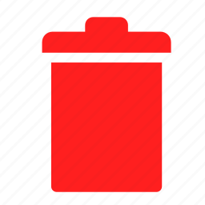

<div class="flex flex-auto border-t-mt-px max-w-screen-xl mx-auto py-4 px-6 sm:px-8 h-full bg-gray-50">

    <div class="w-full">
        <div class="flex flex-col">
            <div class="flex flex-row mt-4">
                <div class="flex flex-col">
                    <mat-label class="font-semibold mr-6 ml-1">Solicitud</mat-label>
                    <mat-form-field class=""style="width: 1010px;">
                        <input type="text" [placeholder]="'US-300'" matInput [formControl]="myControlTest" readonly>
                        <!-- <mat-autocomplete #auto="matAutocomplete" [displayWith]="displayFn">
                            <mat-option *ngFor="let option of filteredOptions | async" [value]="option">
                                {{option.name}}
                            </mat-option>
                        </mat-autocomplete> -->
                    </mat-form-field>
                </div>
            </div>
           
        <ng-container [formGroup]="formOcupation" *ngIf="collaboratorsArr.length">
            <ng-container formArrayName="collaboratorOccupation">
                <ng-container *ngFor="let collaborator of collaboratorOccupation.controls; index as i">
                    <ng-container *ngIf="collaborator !== false;">
                        <div [formGroupName]="i" class="flex flex-col  p-3 bg-card rounded-2xl shadow overflow-hidden w-100vh mb-8">
                            <div class="flex flex-row gt-xs:flex-row justify-between">
                                <div class="flex flex-row gt-xs:flex-row">
                                    <div class="flex flex-col mr-6">
                                        <mat-label class="font-semibold">Colaborador</mat-label>
                                        <mat-form-field class="w-100 " appearance="fill">
                                            <input type="text" matInput formControlName="name" [placeholder]="'Pedro Perez'" [matAutocomplete]="auto"
                                                 readonly>
                                            <mat-icon class="icon-size-5" matPrefix [svgIcon]="'heroicons_solid:user-circle'">
                                            </mat-icon>
                                            <!-- <mat-autocomplete #auto="matAutocomplete" [displayWith]="displayFn">
                                                        <mat-option [value]="this.collaboratorName">
                                                            
                                                        </mat-option>
                                                    </mat-autocomplete> -->
                                        </mat-form-field>
                                    </div>
                                    <div class="flex flex-col ">
                                        <mat-label class="font-semibold">Ocupación</mat-label>
                                        <mat-form-field [ngClass]="formFieldHelpers" class="w-20 ">
                                            <input formControlName="occupation" matInput [placeholder]="'50'"><span matSuffix>%</span>
                                            <mat-error *ngIf="!formOcupation.get('collaboratorOccupation').at(i).get('occupation').valid && (formOcupation.get('collaboratorOccupation').at(i).get('occupation').dirty || formOcupation.get('collaboratorOccupation').at(i).get('occupation').touched)">El campo es obligatorio</mat-error>
                                        </mat-form-field>
                                    </div>
                                </div>
                                <div class="flex flex-row ">
                                    <div class="flex flex-col ">
                                        <mat-label class="font-semibold">Fecha Inicio: </mat-label>
                                        <mat-form-field class="w-50 mr-5" [ngClass]="formFieldHelpers">
                                            <input formControlName="dateInit" matInput [placeholder]="'mm/dd/yyyy'" [matDatepicker]="picker1">
                                            <mat-datepicker-toggle matSuffix [for]="picker1"></mat-datepicker-toggle>
                                            <mat-datepicker #picker1></mat-datepicker>
                                            <mat-error *ngIf="!formOcupation.get('collaboratorOccupation').at(i).get('dateInit').valid && (formOcupation.get('collaboratorOccupation').at(i).get('dateInit').dirty || formOcupation.get('collaboratorOccupation').at(i).get('dateInit').touched)">El campo es obligatorio</mat-error>
                                        </mat-form-field>
                                    </div>
                                    <div class="flex flex-col ">
                                        <mat-label class="font-semibold">Fecha Fin: </mat-label>
                                        <mat-form-field class="w-50 mr-5" [ngClass]="formFieldHelpers">
                                            <input formControlName="dateEnd" matInput [matDatepicker]="picker2" [placeholder]="'mm/dd/yyyy'">
                                            <mat-datepicker-toggle matSuffix [for]="picker2"></mat-datepicker-toggle>
                                            <mat-datepicker #picker2></mat-datepicker>
                                            <mat-error *ngIf="!formOcupation.get('collaboratorOccupation').at(i).get('dateEnd').valid && (formOcupation.get('collaboratorOccupation').at(i).get('dateEnd').dirty || formOcupation.get('collaboratorOccupation').at(i).get('dateEnd').touched)">El campo es obligatorio</mat-error>
                                            <mat-error *ngIf="formOcupation.get('collaboratorOccupation').at(i).hasError('dates')">La fecha debe ser menor a fecha inicio</mat-error>
                                        </mat-form-field>
                                    </div>
                                </div>
                                <div class="flex flex-row mr-6">
                                    <button class=" min-w-10 min-h-7 h-7 px-2 leading-6 my-auto mr-4" mat-stroked-button
                                        (click)="detail()">
                                        <mat-icon class="icon-size-5"
                                            [svgIcon]="showObservation !== true ? 'heroicons_solid:chevron-down' : 'heroicons_solid:chevron-up'">
                                        </mat-icon>
                                    </button>

                                    <button (click)="deleteItem(collaboratorsArr, collaboratorsArr[i])"></button>
                                </div>
                            </div>
                            <div *ngIf="showObservation === true " class="flex flex-col mt-2">

                                <mat-form-field class="fuse-mat-textarea flex-auto">
                                    <textarea formControlName="observation" matInput [placeholder]="'Observaciones'" [rows]="1"></textarea>
                                    <mat-icon class="icon-size-5" matPrefix [svgIcon]="'heroicons_solid:menu-alt-2'"></mat-icon>
                                </mat-form-field>
                            </div>
                        </div>
                    </ng-container>
            </ng-container>
            </ng-container>
                
                </ng-container>
                <!-- No collaborators Selected -->
            <ng-container *ngIf="!collaboratorsArr.length">
                <div class="p-8 sm:p-16 border-t text-4xl font-semibold tracking-tight text-center">No ha seleccionado colaboradores!</div>
            </ng-container>
        <div>
    </div>
  
            <div class="flex flex-row mt-8 justify-end">
                <button (click)="redirection('partner-search', 0)" mat-stroked-button style="border-color:lightgray !important;">Cancelar
                </button>
                <!-- <button class="-ml-4" mat-button [color]="'warn'">Cancelar</button> -->
                <button class="ml-3" mat-flat-button [color]="'primary'">
                    <span class=" justify-center">Guardar</span>
                </button>
            </div>
        </div>
    </div>
</div>
  